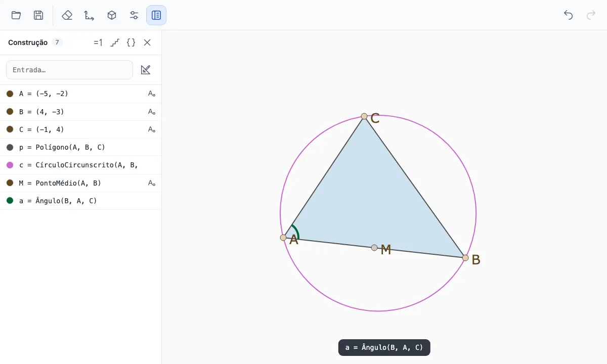
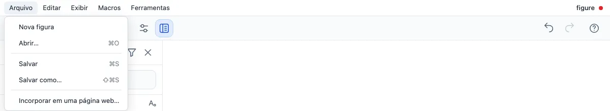

A interface

A barra de menus

| Menu | Comandos |
|---|---|
| Arquivo | Nova figura, Abrir… (Ctrl O), Salvar (Ctrl S), Salvar como… (Ctrl Shift S), Incorporar em uma página web… |
| Editar | Desfazer, Refazer, Excluir, Borracha |
| Exibir | Eixos, Visualização 3D, Histórico da construção, Propriedades, Tela cheia (Esc para sair): uma marca de seleção indica o que está exibido |
| Ferramentas | Manual de utilização, DocTools, Licença e GitHub, Acerca de… |
À direita, o nome do arquivo da figura, no Chrome e no Edge (salvar). A barra de menus não aparece quando o DocGeo está integrado em outra página, como o DocTools.
A barra de ações
| Botão | Função | |
|---|---|---|
| Abrir |
.dgo, .dgp,
.ggb
|
|
| Salvar | em .dgo |
|
| Borracha | ocultar ou exibir objetos (borracha) | |
| Eixos | eixos e malha; em 3D, triedro e piso | |
| Visualização 3D | passar ao espaço ou voltar ao plano (3D) | |
| Propriedades | painel da direita (propriedades) | |
| Construção | painel da esquerda | |
| Desfazer, Refazer | Ctrl Z, Ctrl Shift Z ou Ctrl Y | |
| Manual de utilização | abre o manual no idioma do DocGeo, em uma nova aba |
No centro, a zona contextual mostra o nome e as ações do objeto selecionado.
O painel “Construção”
-
Uma linha por objeto, na ordem da construção:
M = PontoMédio(A, B). Cada linha pode ser modificada (redefinição). - A bolinha no início da linha oculta ou exibe o objeto; no fim da linha exibe seu nome.
- abre sua definição nas propriedades.
- Ao passar o ponteiro sobre qualquer linha, permite eliminar o objeto e os seus dependentes. Esta ação pode ser desfeita.
- Cabeçalho: número de objetos, valores, passo a passo, novo programa.
- Linha de entrada “Entrada…” e botão do menu de ferramentas.
- Passar o ponteiro sobre uma linha faz o objeto brilhar, e vice-versa.
A indicação
O balão na parte de baixo da figura indica o que é esperado (“Selecione um ponto”), a linha que a ferramenta vai escrever e os erros em vermelho. Seu ✕ abandona a ferramenta em uso.
Navegar
| Ação | Gesto |
|---|---|
| Mover a vista | arrastar um lugar vazio; botão direito em qualquer lugar |
| Dar zoom | roda do mouse ou trackpad, em torno do ponteiro |
| Girar uma figura 3D | botão direito, ou um dedo num lugar vazio |
| Perspectiva, piso (3D) | P, S |
O botão redondo no canto inferior esquerdo, presente quando a figura tem animações, pausa-as ou retoma-as.
Desfazer
Toda modificação é um passo de uma pilha única: construção, exclusão, deslocamento, estilo, ajuste do sistema de coordenadas, passagem ao 3D. O zoom, o deslocamento e a rotação da vista não são.
Os painéis
- A borda interna deles é arrastada para redimensioná-los; um clique duplo restaura a largura padrão.
- Abaixo de 900 px de largura, só um painel fica aberto por vez; com 600 px ou menos, o painel “Construção” começa fechado, as propriedades cobrem a figura e escolher uma ferramenta fecha os painéis.